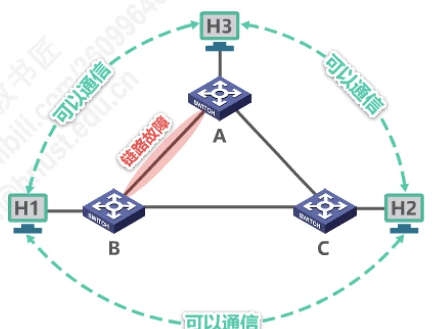
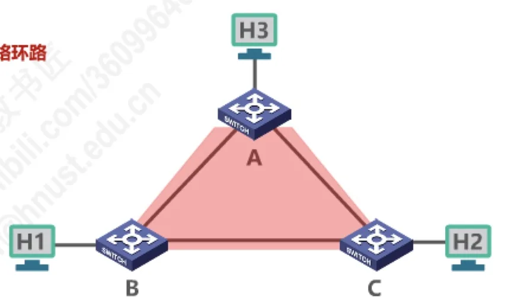
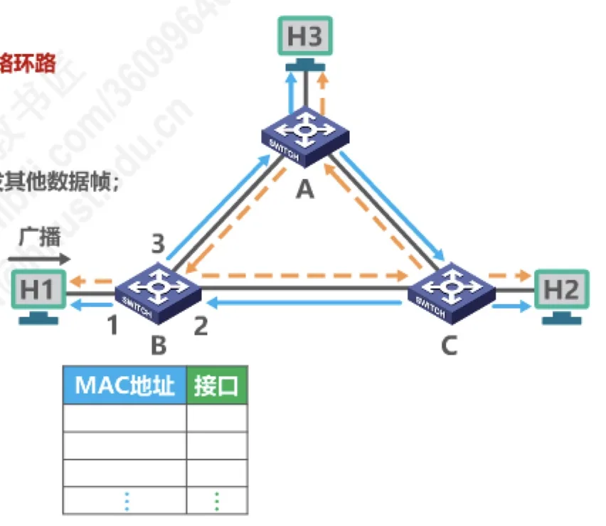
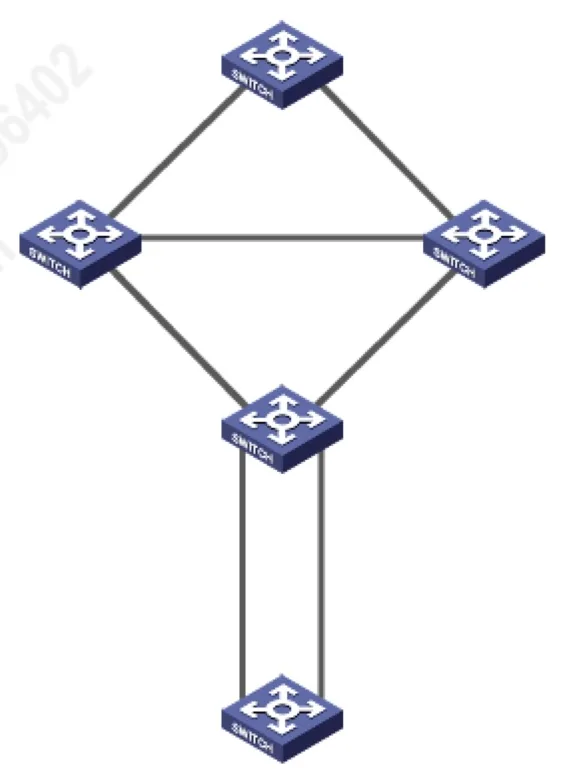

计算机通信与网络 · 第 3 章 数据链路层
3.10 以太网交换机的生成树协议STP
以太网要可靠，就不能只有一条链路——但加了冗余链路又会绕出环路，环路会让广播帧永远转圈、把交换机的帧交换表搅乱。本节先说清这个「既要冗余、又要无环」的矛盾，再看生成树协议 STP 如何用一棵逻辑上的树把冗余链路暂时「藏起来」，故障时再启用，从而两全其美。
1. 提高以太网可靠性的两难
以太网中如果两台交换机之间只有一条链路，那么这条链路一旦出现链路故障，链路两端的主机就无法通信。显然，链路的可靠性直接决定了网络的可靠性。
提高可靠性的直接办法是添加冗余链路：在两台交换机之间再连一条链路。这样一来，其中一条断了，还可以走另一条，主机之间仍然可以通信。这正是冗余的价值所在。

但冗余链路也会带来负面效应——形成网络环路。交换机之间一旦连成一个环，帧就可能在这个环上不停地打转，问题随之而来。

2. 网络环路带来的三个问题
网络环路会带来以下问题：
- 广播风暴：广播帧在环路上被反复转发、越积越多，大量消耗网络资源，使得网络无法正常转发其他数据帧；
- 主机收到重复广播帧：同一帧被主机反复收到并处理，大量消耗主机资源；
- 交换机的帧交换表震荡（漂移）：同一台主机的帧从环的两侧先后进入同一台交换机，交换机就会把该主机的接口号反复改写，刚刚学到的记录马上又被覆盖，学习结果无法稳定。
可见，冗余链路与环路问题是同一个硬币的两面：没有冗余就不可靠，有了冗余若不加管理就会失控。

3. 生成树协议 STP
解决办法是生成树协议 STP（Spanning Tree Protocol）：以太网交换机使用 STP，可以在增加冗余链路来提高网络可靠性的同时又避免网络环路带来的各种问题。
它的思路是让交换机的物理连接与逻辑拓扑分开：
- 不论交换机之间采用怎样的物理连接，交换机都能够自动计算并构建一个逻辑上没有环路的网络，其逻辑拓扑结构必须是树型的（无逻辑环路）；
- 最终生成的树型逻辑拓扑要确保连通整个网络，不能为了消环而把某些交换机孤立起来；
- 当首次连接交换机或网络物理拓扑发生变化时（有可能是人为改变或故障），交换机都将进行生成树的重新计算。
换句话说，STP 把物理上成环的链路在逻辑上「剪掉」若干条——被剪掉的链路处于阻塞状态，平时不转发数据，但仍然存在；一旦某条正在工作的链路发生故障，STP 重新计算后就把这条备用的阻塞链路正常启用，网络随即恢复连通。冗余的可靠性与无环的稳定就这样同时得到了。

注记：生成树算法 STA（Spanning Tree Algorithm）的具体计算过程已超出本系列课程的教学大纲，需要深入的同学可参看《计算机网络简明教程和仿真实验》系列课程。
本节小结
- 提高以太网可靠性的办法是添加冗余链路，但冗余链路会形成网络环路，二者必须同时考虑；
- 网络环路的三大危害：广播风暴（大量消耗网络资源）、主机收到重复广播帧（大量消耗主机资源）、交换机的帧交换表震荡或漂移；
- 生成树协议 STP 的作用：在保留冗余链路的同时避免环路带来的各种问题，兼顾可靠性与稳定性；
- STP 让交换机自动计算并构建一个逻辑上无环路的树型拓扑，并要求该拓扑连通整个网络；首次连接交换机或物理拓扑发生变化时，交换机会重新计算生成树；
- STP 的实现方式是把部分冗余链路置为阻塞状态备用，故障发生时再启用，逻辑拓扑始终是一棵树。